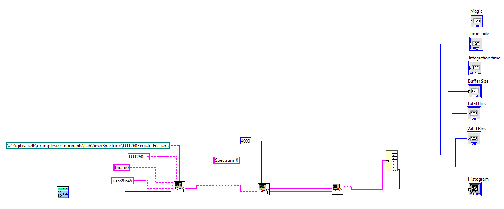

|
SciSDK Library
SDK for SciCompiler projects
|
|
SciSDK Library
SDK for SciCompiler projects
|
The energy spectrum is a histogram with the energy on the x-axis and the number of counts on the y-axis. The hisogram is a configurable size memory managed by the IP core in the fpga. The spectrum core increment the bin of the histogram rappresenting the energy of a photon when a photon is detected. An energy spectrum has two input:
energy: a 16 bit value rappresenting the energy of the photondv: a trigger that validate the energy value and increment the bin of the histogramAn energy spectrum has the following parameters taken from the JSON file:
Number of bins and number of bits define the memory occupancy of the spectrum indeed they are defined at compile time by SciCompiler.
The following parameters can be configured:
| Parameter | Acces Mode | Description | Default value |
|---|---|---|---|
| rebin | R/W | set x-axis rebin factor. 0 no rebin is applied | 0 |
| min | R/W | minimum value of the input (before rebin) energy will be put on histogram | 0 |
| max | R/W | maximum value of the input (before rebin) energy will be put on histogram | 65535 |
| limitmode | R/W | spectrum integration limit target: freerun, time_ms, total_count, peak_count | freerun |
| limit | R/W | target value when limit mode is set to: time_ms, total_count, peak_count | 0 |
| bins | R | number of bins of the histogram | |
| max_conts | R | maximum number of counts y-axes on the histogram | |
| buffer_type | R | type of the buffer: (always decoded) |
The spectrum component support rebin. Rebin is a process that reduce the number of bins of the histogram. The rebin factor is a power of 2. Rebin set to 0 means no rebin is applied. Rebin set to 1 means that the number of bins is divided by 2. A couple of bins are merged in one bin summing together the counts of each one. The rebin factor is set by the parameter rebin. The rebin factor is applied to the x-axis of the histogram. That means that if rebin is changed while the spectrum is running it is mandatory to reset the histogram. Rebin is applied before the energy is put on the histogram. The rebin factor is applied after the min and max parameters. This parameter is an hardware rebin, is useful to reduce the readout speed of the histogram. The rebin is applied in the fpga and the histogram is readout with less bins by the software in agree with what is set in rebin parameter. If speed is not a problem it is better to use the software rebin while post processing. This allows to preserve the original histogram resolution and change it in runtime.
The min and max parameters are used to set the range of the histogram. The min and max parameters are applied before the rebin factor. They are useful to cutoff unwanted values like value close to the baseline that can have a too high rate.
The limit mode is used to set the integration time of the spectrum. The limit mode can be set to:
Limit must be congirured accordingly to the limit mode. The limit mode is set by the parameter limitmode. The limit is set by the parameter limit. limit parameter is a 32 bit in value value. The limit is expressed in milliseconds for time_ms mode, in counts for total_count and peak_count mode. In order to use the limit, the two parameters limitmode and limit must be set before the spectrum is started.
The correct procedure to set (for example) the time limit is:
limitmode to time_mslimit to the desired value (ie 10000 for 10 seconds)start commandDuring the running phase it is possible to:
stop command (abort)reset_counters commandThe following commands are available:
| Command | Description | Parameter |
|---|---|---|
| start | start the spectrum integration | |
| stop | suspend the spectrum integration | |
| reset | reinitialize all bins in the histogram to 0 | |
| reset_counters | reset all limit counters and statistics counters in order to restart limits |
start and stop commands do not reset the spectrum. They should be consideder as a start and pause of the spectrum. A start command after a stop command will continue the integration from the last bin value. In order to reset the spectrum it is necessary to use the reset command. The reset command reset all the bins in the histogram to 0. The reset command is useful to restart the spectrum from scratch. reset command execute also the reset_counters command.
This command is useful to reset all limit counters and statistics counters in order to restart limits. This command is executed by reset command implicitally. When this command is executed the progress in the status is also reset to 0.
Spectrum component support only decoded output data format.
The data output structure is the following:
The magic field is a 32 bit value that identify the data format. The data field is a pointer to the data buffer. The data buffer is an array of 32 bit values. The number of elements in the array is defined by the total_bins field. The valid_bins field is the number of bins that contains data. The valid_bins field is always less or equal to total_bins field. The rebin factor is used to calculate the valid bins. The valid_bins field is calculated as total_bins >> rebin. The valid_bins field is used to calculate the number of elements in the data array: only the first valid_bins elements are valid.
timecode it's the epoch of the readout PC when the data is readout from the fpga. The timecode is expressed in milliseconds.
Data in the data array are the counts of each bin. The first element of the array is the bin with the lowest energy. The last element of the array is the bin with the highest energy. Each element of the array is a 32 bit value.
| Data Format |
|---|
| bin 0 |
| bin 1 |
| bin 2 |
| ... |
| bin n |
The status of the spectrum is stored in a SCISDK_SPECTRUM_STATUS structure.
The running field is true if the spectrum is running. The completed field is true if the spectrum run is completed. This field has meaning only if the spectrum limitmode is:
total_countpeak_counttime_mscompleted is false until the internal limit counter do no reach the limit value.
The progress field is the progress of the spectrum integration in respect of the value of limit. The progress is expressed in percentage.
The peak_max field is the value of the bin with the highest count.
The total_counter field is the total number of counts in the histogram.
The integration_time field is the integration time of the spectrum in milliseconds.
The current version of the library do not report the peak_max, total_counter, integration_time fields. These fields are always 0.
The following example shows how to use the spectrum component.

You can find the labview file for this example here
This example print a spectrum every second.
Configure the spectrum with a time limit of 10s, poll and print the status percentage and when completed will be true, readout and print the spectrum
This example set the rebin factor to 2 and print the spectrum